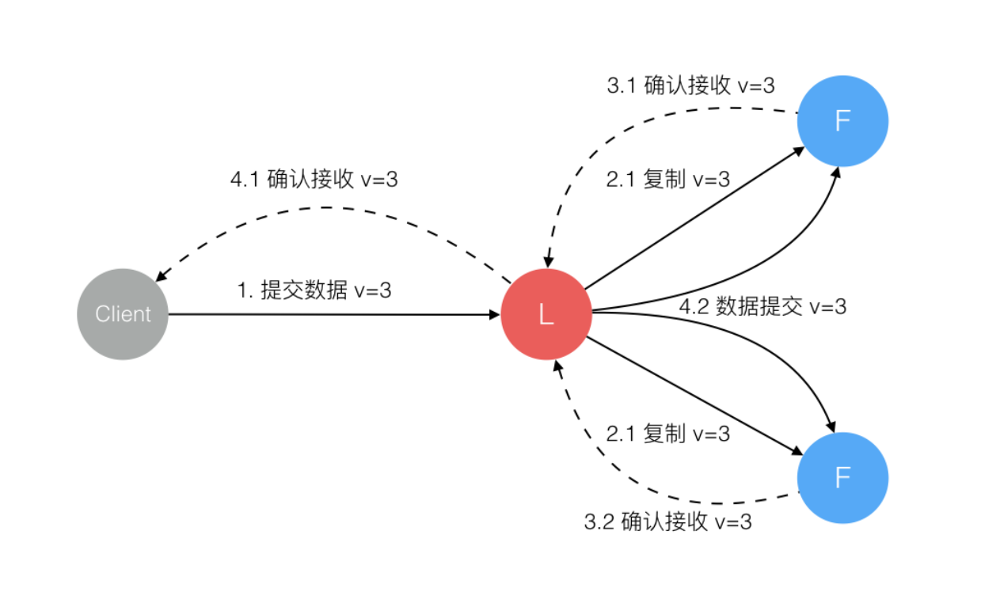
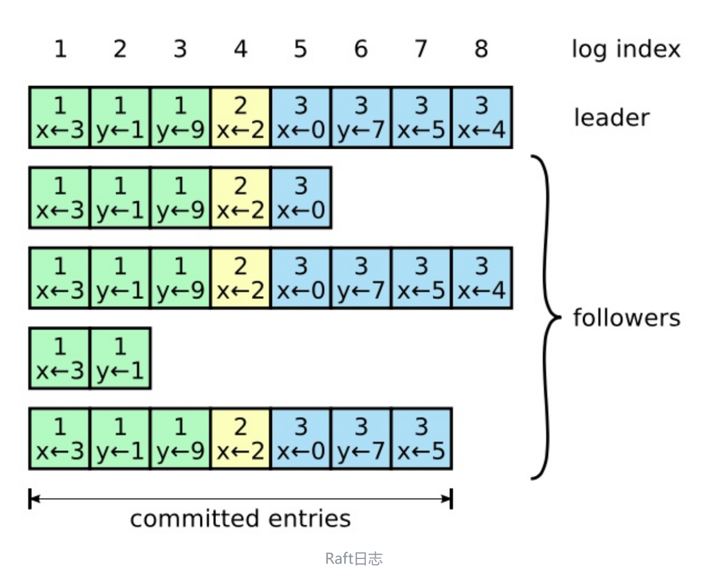
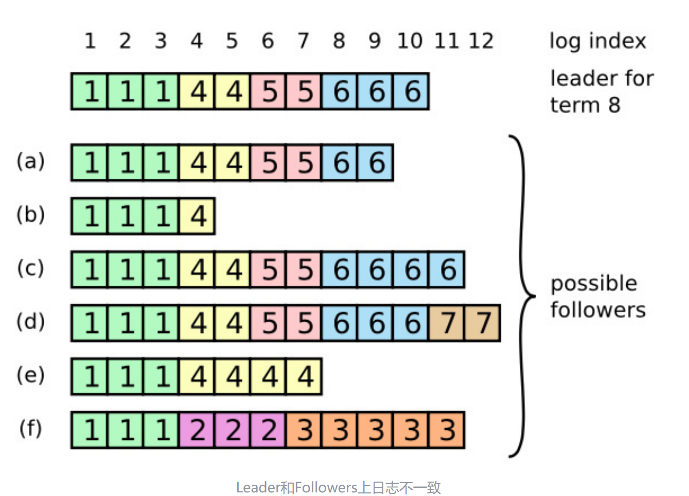
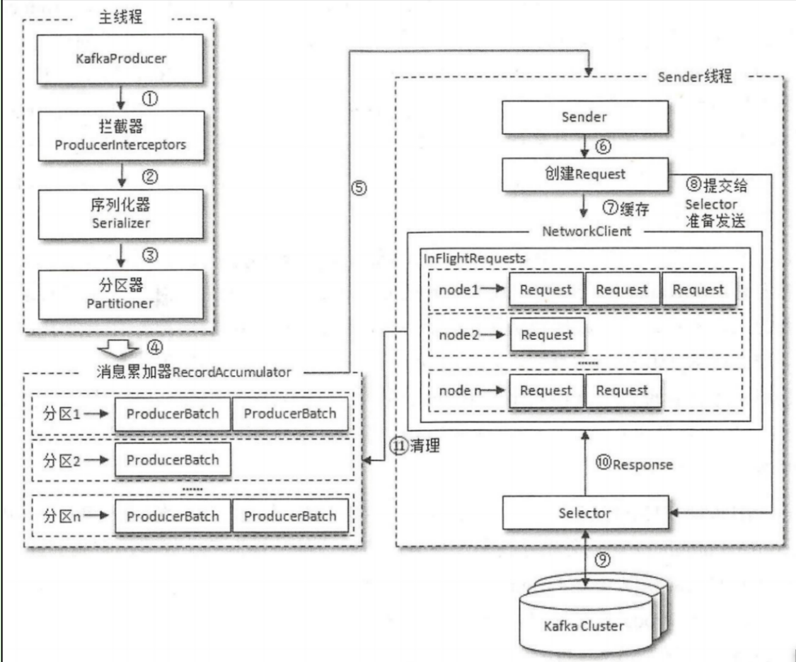

Kafka总结¶
API¶
总结各种API的使用方法
需要引入和Kafka版本对应的依赖：
| Java | |
|---|---|
1 2 3 4 5 | |
Topic¶
对于Topic的管理，主要通过KafkaAdminClient类来实现，它是一个线程安全的客户端管理类。
基本逻辑：操作该类API，返回的结果全部是kafka内部对JDK8 Future的封装的kafkaFuture集合。启动的是异步任务，并且安装的回调只有thenApply方法，在这里此方法默认在异步线程执行，并返回future给main线程。
创建¶
使用KafkaAdminClinet::createTopics
| Java | |
|---|---|
1 2 3 4 5 6 7 8 9 10 11 12 13 14 15 16 17 18 19 20 | |
删除¶
在windows版本上删除API有bug。
| Java | |
|---|---|
1 2 3 4 5 6 7 8 9 10 11 12 13 14 15 16 | |
查看¶
| Java | |
|---|---|
1 2 3 4 5 6 7 8 9 10 11 12 13 14 15 | |
Producer¶
创建¶
| Java | |
|---|---|
1 2 3 4 5 6 7 8 9 | |
其中，一个record的key-value序列化格式是必须指定的。
其余常见参数：
acks其中-1是allretries:发送失败重试次数batch.size：数据发送批次大小max.request.size：一次请求的数据量上限linger.ms：数据在缓冲区保存的时间buffer.memory：生产者的缓冲区大小
发送消息¶
生产者并不和topic绑定，一个生产者可以随意向不同的topic发送record。而record和topic绑定
Kafka所提供的是一个返回值为JDK5 Future的sendAPI，但是在此基础之上封装了可以安装回调的方法，并且默认是异步回调，在I/O线程执行。
那么如果异步的回调很重，Kafka官方文档如下所示：
Note that callbacks will generally execute in the I/ O thread of the producer and so should be reasonably fast or they will delay the sending of messages from other threads. If you want to execute blocking or computationally expensive callbacks it is recommended to use your own java. util. concurrent. Executor in the callback body to parallelize processing.
也就是说，可以通过横向再次使用异步线程，将异步回调的执行位置和I/O线程进行隔离，将回调任务的执行放在自己维护的线程池中。这样保证了最核心的发送消息不受影响。
| Java | |
|---|---|
1 2 3 4 5 6 7 8 9 10 11 12 13 14 15 16 | |
consumer¶
创建¶
此时就是消息的反序列化是必须的了。
| Java | |
|---|---|
1 2 3 4 5 6 7 8 9 10 11 | |
消费¶
下面基于的是subscribe方式,可以基于给定枚举值，也可以基于正则表达式。
消费的模式是poll的方式。
这个方法是同步阻塞的方法。
| Java | |
|---|---|
1 2 3 4 5 6 7 8 9 10 11 12 | |
消费位置与手动提交¶
这个很重要，比如现在先开启一个生产者，生产100条数据，然后停掉。再开启消费者，消费者是消费不到这100条数据的。
原因就是消费者每次消费完之后会有消费偏移量的记录。而如果面对一个全新的数据，是没有这个消费者的offset记录的，这时候就需要根据auto.offset.reset来判断将offset重置为什么，该值默认是latest，就是默认从该消费者订阅该主题开始生产的第一条数据开始消费。可以根据需要设置为earliest。
而如果设置了enable.auto.commit为true，则消费时会默认5s提交一次offset。这个逻辑是放在了poll方法里面做的，也就是当再次请求的时候，提交的是上一次截止的offset。问题就出现在这里，consume(这里只是poll逻辑)和offset的实际提交并不是atomic的，这就必然会导致下面的情况：
consume做了，但是offset丢了。则带来的是重复消费。
如果更进一步，如果将业务逻辑的处理完毕作为实际的consume逻辑，而不是简单的poll完毕。考虑实际处理业务逻辑的线程很重，交给了一个线程池维护，而这里的consumer只负责拉取消息并存储到共享存储中(比如一个blockingQueue)中，这时候的业务和拉取的两个线程实际构成了消费者-生产者模式。而其中的共享存储只是一个内存集合，并没有做任何的高可用逻辑，这就导致这块的逻辑根本不可靠，消息丢失也就在所难免。而在poll之后的offset提交显然就是不符合consume做完就原子性提交offset的要求。所以各种方式的策略永远只是折中权衡之后的结果，没有通用的办法。kafka不可能把业务逻辑什么的全部考虑在内，暴露的细粒度API也正是为了将实现转换到特定的业务实现者身上。
所以原生的kafka所提供的依据poll来提交offset的逻辑并不可靠，这时候可以考虑手动提交。
手动提交的方式
提交的offset就是下一次开始消费的offset
同步提交
commitSync：显然，就是同步阻塞等待提交完毕，或者如下使用指定主题和分区粒度的同步提交(`)。@Override public void commitSync(final Map<TopicPartition, OffsetAndMetadata> offsets) { commitSync(offsets, Duration.ofMillis(defaultApiTimeoutMs)); }
异步提交
commitAsync：开启异步线程执行commit任务，并且可以安装回调
这里就是把提交的任务同样放到异步线程中去做，这样的话效率极高，但是对准确性的保障更少了。同时，可以安装异步回调。
还有一种情况：这里如果需要在外部维护存储任务的offset，比如存储到DB中，则这里官方的API文档两种提交方式都有如下说明：
This commits offsets only to Kafka. The offsets committed using this API will be used on the first fetch after every rebalance and also on startup. As such, if you need to store offsets in anything other than Kafka, this API should not be used.
这里似乎没有办法解决，但是我感觉通过seek方法每次将DB中offset读出来之后，直接seek到指定位置即可。
架构设计¶
Paxos与Raft¶

Paxos¶
最经典的共识算法当然是PAXOS,而最经典的论文当然是读不懂的，下面是目前找到的最完备的paxos资料：
核心就是多数派读写。
可靠分布式系统-paxos的直观解释 - OpenACID Blog
Raft¶
能找到的通俗易懂的文章如下：
Raft从多副本状态机的角度出发，将一致性问题进行拆分，分为leader选举，日志同步，安全性，日志压缩，成员变更等。
下面总结最核心的leader选举以及日志变更。
leader选举
集群通过心跳来维护选举的触发。当一个follower长时间没有感知到leader的heartbeat，则会认为其已经挂掉，于是开启一次选举。选举多数派为leader，并且leader必然有最新的log. 一个leader统治的时间称为一个term
日志同步
典型的写多读少的架构，都会使用LSM Tree进行存储。第一次接触到这个词还是在深入浅出存储引擎 (豆瓣) (douban.com)这本书中。与之对应的是写少读多的b+ tree。Kafka不同于传统的消息队列，它使用了磁盘存储，其性能也得益于和内存存储相差无几的磁盘顺序读写，以及zero copy。
LSM的核心就是日志段 +WAL预写日志。
而Raft中，同样leader接收client请求，将日志进行对follower多数派写之后并确保ok之后，再执行commit。

leader向集群发出RPC请求，将最新的log entry全部写到follower.
集群整体的日志概览如下：

Raft中的日志存储，有两点重要性质
- 横着看，对于一个leader或者是一个follower，保证如果出现了两个log entry拥有同样的log index以及termID,则它们存储的命令是相同的(唯一性)。
- 竖着看，出现了两个log entry拥有同样的log index以及termID，则它们之前的所有log entry完全相同。
性质1是因为leader在一个term内对于给定的log index最多创建一个log entry，而该log entry在日志中相对位置永远不变
性质2是因为进行日志复制的Rpc(AppendEntries RPC)的时候，leader会把新的log entry包括的上一个log entry的log index和term一起发送，如果在follower中没有相应log entry，则他会拒绝新的log entry
如果进行了leader的选举，日志分布可能如下所示：

如上图所示，一个leader被选举出来，其日志不一定是最新的。一个follower可能会缺少leader中的一些log- entry,也可能比选举出来的leader日志还多
这时候，leader采取强制follower复制它的日志来处理日志不一致，follower上的不一致日志会被强制覆盖。具体操作是leader找到followers最长匹配前缀，保留不变，并覆盖之后的位置为leader位置的内容。
生产者和消费者设计¶
sender thread实际上应该称为I/O thread

生产者¶
消息发送
核心方法是主线程调用的dosend方法。
该方法首先获取topic的元数据信息，然后将k-v序列化，选择发送的partition,然后将消息发送到缓冲区accmulator，其中一个batch.size默认是16KB。如果缓冲区满了，则唤醒sender线程异步发送消息，同时返回一个Future
而最为核心的sender，本质上是一个Runnable实现类，也就是一个Runnable任务，而最后还是需要依托于Thread实体来运行，也就是如下所示：
| Java | |
|---|---|
1 2 | |
其实通过前面的回调测试，就可以看出回调函数的执行位置：kafka-producer-network-thread | producer-1，也就是真正的负责发送数据的I/O线程。Kafka官方也一直把它叫做I/O thread，而这里的和集群通信使用的是JDK NIO.
应答机制
通过acks参数来进行控制。有以下三种情况：其中的参数大小代表着需要应答的broker的数量。
- acks=0,等同于
fire and forget - acks=1,等同于只需要
leader进行WAL即可。 - acks=all/-1，等同于需要
leader与follower读写之后再确认，同样会丢数据
消费者¶
调用模型
消费通过poll方法进行，内部调用链为Consumer -> NetworkClient -> Selector -> NIO selctor同样底层使用NIO进行通信。
同partition间的关系
至于和partition之间的关系，核心就是在一个消费者组内，数据源的同一个partition不能被两个consumer同时消费，显而易见，是因为可能出现消费顺序问题。而不同的消费者组之间是相互隔离互不影响的。
rebalance
由coordinator负责，具体方式是：对于该消费者组来说，在broker中选择一个coordinator，再在该消费者组中选择一个作为leader，进行通信并选择特定时机触发rebalance
负责同一个消费者组内分区的分配，触发时机为：
- 组成员发生变更
- 正则表达式订阅
topic导致topic数量变了 topic本身变化
分配方式：
range: 假设该consumer group有2个consumer，订阅了2个topic，则分别针对每个topic进行平均划分，站在topic的角度，每个consumer获得的range大小类似。round-robin:将所有topic的partition汇聚，轮询发给每个consumersticky：尽量保持原有关系不变
冗余存储与一致性¶
下面为旧版本的kafka
kafka是一个AP系统，适当放宽了一致性的条件。
冗余存储的类别(一个partition可能的身份)如下：
leader：响应client读写的副本follower:被动接受leader的同步ISR副本：leader副本以及所有和leader保持同步的副本
所有的副本都有两个属性：LEO以及HW
LEO:log end offset，记录了该副本的log的下一条消息的offset位置。如果一个消息占据一个位置，则LEO=10表示该副本存储了10条消息，offset范围为0到9HW，同Flink中的水位线概念一致，不过一个是基于时间，一个是基于位置。是一个assert，断言纵向来看所有的副本之后只会比这个位置大，而不会出现还有的没有到达这个位置。
而consumer消费的消息范围就是leader的HW以内的所有消息。
LEO
首先来看follower-leo
Kafka有两套follower-leo，分别存储在leader端，以及对应的follower端。
在该follower端本身存储的leo，会在其自己接收到leader端给自己的log的时候更新leo
而在leader端存储的leo，它更新的依据就是follower端向自己发送请求，它就认为这个follower已经有了这个log，并更新自己这边维护的这个follower-leo。
这里其实类似于前面消费者那里的问题，由于过程不是原子的，并且poll也不是真正的consume逻辑，则必然会出问题。
然后是leader-leo，它的更新逻辑很简单，自己写log的时候就直接更新了。
HW
首先是follower-hw.在更新完follower-leo之后，将其与leader-hw对比，则follower-leo.min(leader-hw)为自身的hw。
而leader-hw代表着最终系统可供消费的数据线，是最为核心的概念。leader-hw就是在leader端所维护的所有有效副本的leo的最小值，也就是纵向来看的最长匹配前缀。
这里可以看到几乎与raft的原理一致。
幂等性¶
kafka中开启幂等性：
- enable.idempotence = true
- retries > 0
- max.in.flight.requests.per.connection<=5
- acks = -1/all
这里的幂等性是指数据不会被重复发送(单个分区内)。
实现思路很简单，加上唯一标识即可，也就是给每个producer加上id,然后给每个消息加上自增id，则这样两者组成的二元组可以唯一标识每条消息。如果重试，则再次发送的消息的唯一标识和上次的一样，则会被幂等过滤掉。
性能¶
性能的影响因素，这里主要是append-only以及zero-copy。
append-only¶
顺序写的速度要远大于随机写，而磁盘(或者SSD)的顺序写某些情况下甚至可以达到内存的随机写，这是append-only的方式来应对大量写的关键。
zero-cpoy¶
内核态与用户态的切换，本质上通过改变CPU的特定寄存器，可以控制CPU的特权等级，从而执行不同等级的指令，并且可以控制访问由操作系统所维护的不同的内存区域以及数据。关于磁盘的读写，必须是特权指令，以保证OS的安全。但是如果用户进程有读取请求，那么可以通过系统调用来陷入内核态，执行指定的操作。当然切换的时候伴随着上下文切换。
考虑一个完整的IO流程：从磁盘读取数据，经过用户处理之后从再网卡发送出去。
而传统的I/O，数据拷贝都需要由cpu来做。
4次切换，4次拷贝(2 DMA, 2CPU)
而如果考虑DMA之后,相当于cpu把读写请求做一个异步任务放到DMA上，可以极大减轻cpu的压力。这时候一次完整的IO请求一共有4次数据拷贝，DMA两次，cpu两次。但是消耗不变，只是可以将CPU压力减小，转移到DMA上。
则耗时的地方就是用户态与内核态的上下文切换以及数据拷贝。注意这里用到了内核缓冲区，而大文件传输可以不同内核缓冲区，它不是必需品，只是加速工具。
mmap+write
4次切换，3次拷贝(2 DMA,1CPU)
而用户进程如果可以直接操作内核缓冲区的数据，那么就可以减少数据的拷贝。这就是mmap(memo map)的思路。
mmap会直接把内核缓冲区的数据共享到内存空间，这样可以先减少切换的两次的用户态/内核态切换的数据拷贝，同时增加一个从缓冲区到socket缓冲区的数据拷贝，最终减少了1次数据拷贝。这里还是会使用DMA
而系统调用还是两次，也就是内核态/用户态切换还是4次。
| Java | |
|---|---|
1 2 3 4 5 6 7 8 | |
sendfile
2次切换，3次拷贝(2 DMA, 1CPU)
和mmap + write区别就是两个系统调用合并。
zero copy
2次切换，2次拷贝(2DMA)
这里在进行网络通信的时候不再是将数据从mmap位置写到socket缓冲区，而是将描述信息发送过去，不耗cpu。最后DMA直接从mmap位置的缓冲区把数据读走就可以。也就是数据从磁盘读取到内核态缓冲区之后，始终位置不变，直到最后直接被DMA发送到网卡最后打出去。
| Java | |
|---|---|
1 2 3 4 5 6 7 8 9 | |
然后可以在port 9999读取发送过来的数据.
| Java | |
|---|---|
1 2 3 4 5 6 7 8 9 10 11 12 13 14 15 16 | |
大文件
大文件的IO就不使用内核缓冲区了，用异步IO直接从磁盘文件读取到用户缓冲区即可。